This was the 2024 Divisional Round playoff game. The bills lost 27-24 after a late missed field goal attempt by Tyler Bass. You can see that all the fans were ready for Taylor Swift to take over the stadium! That she did, her boyfriend Travis Kelce scored not one but two touchdowns for the Chiefs victory.
Tailgate
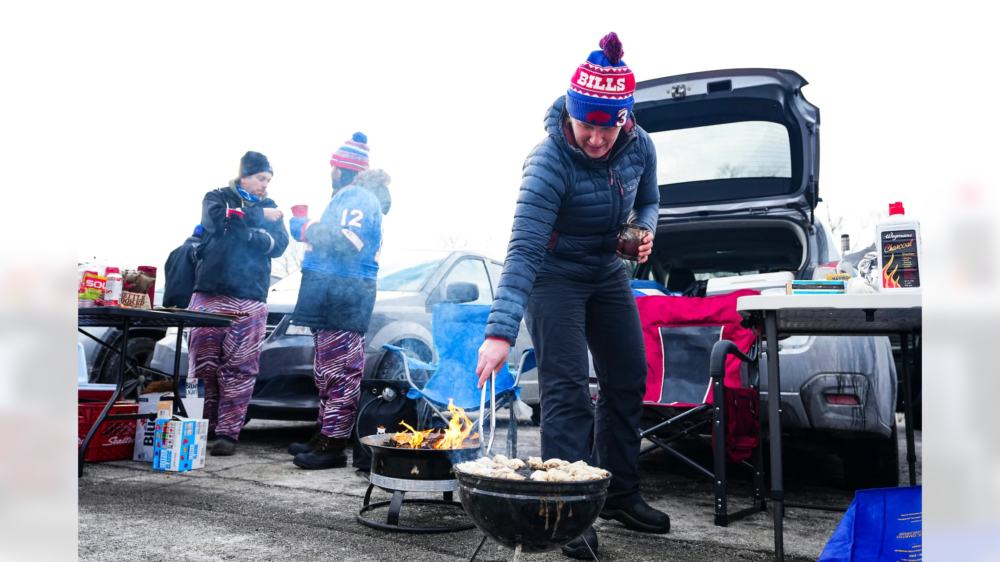
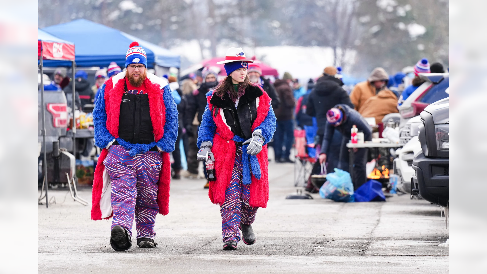
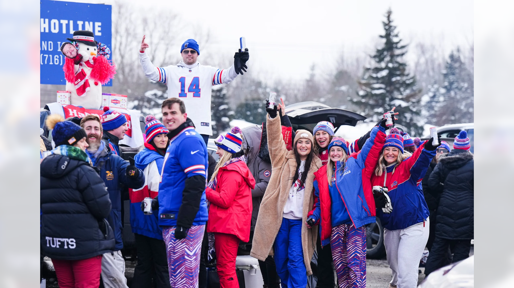
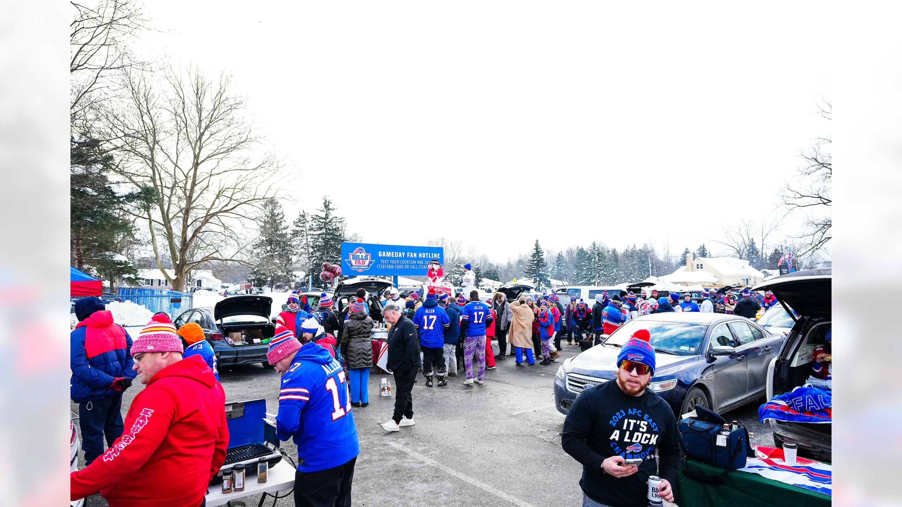
The fans are getting ready for the game! Today is the day! Mahomes and the Chiefs are going to feel the cold today! All photos seen above are from the south lot tailgate, it is my personal favorite to go to because this is where all the true Bills Mafia fans go!
Meet The Mafia
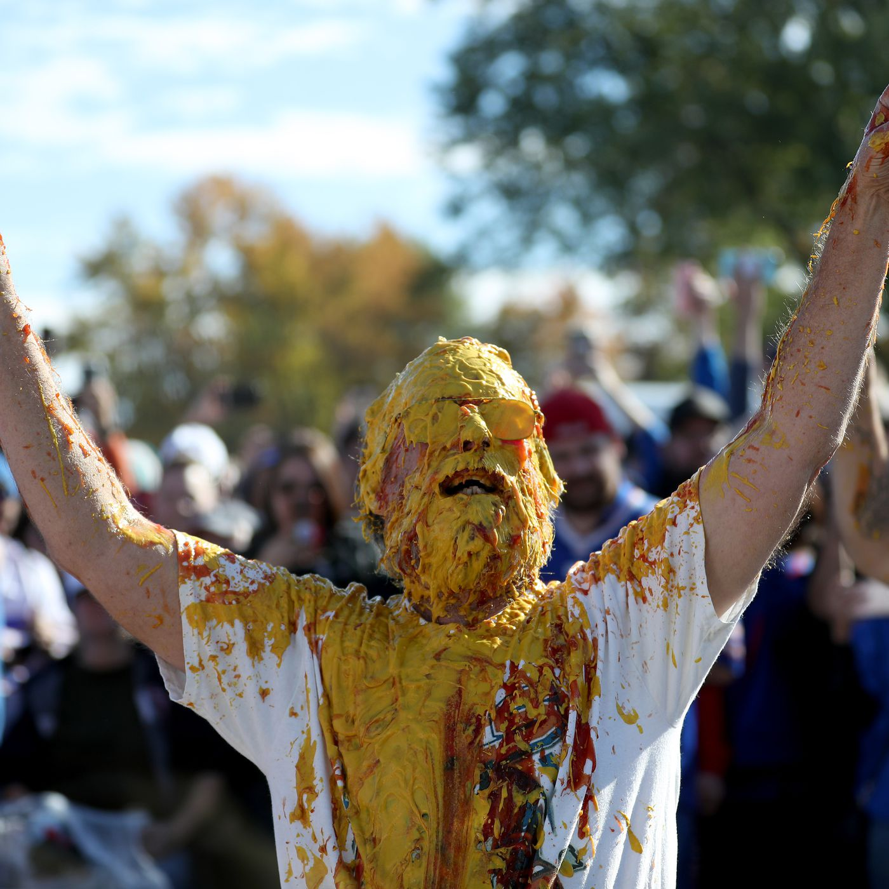
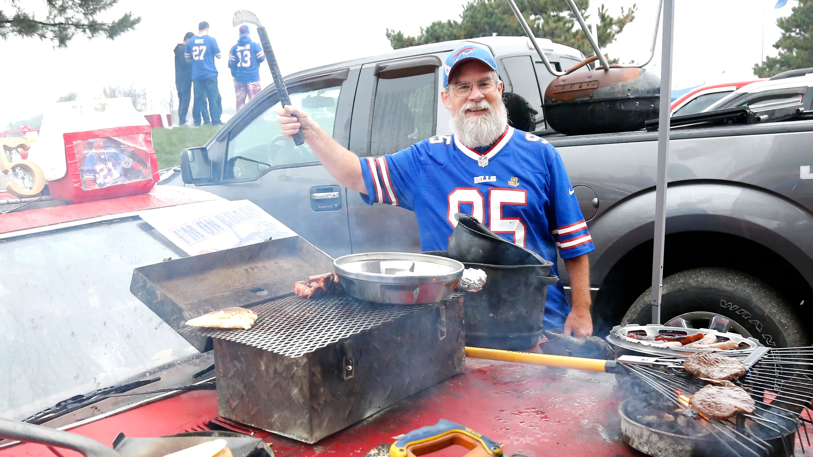
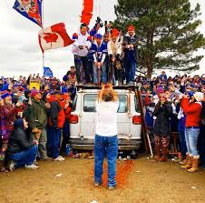
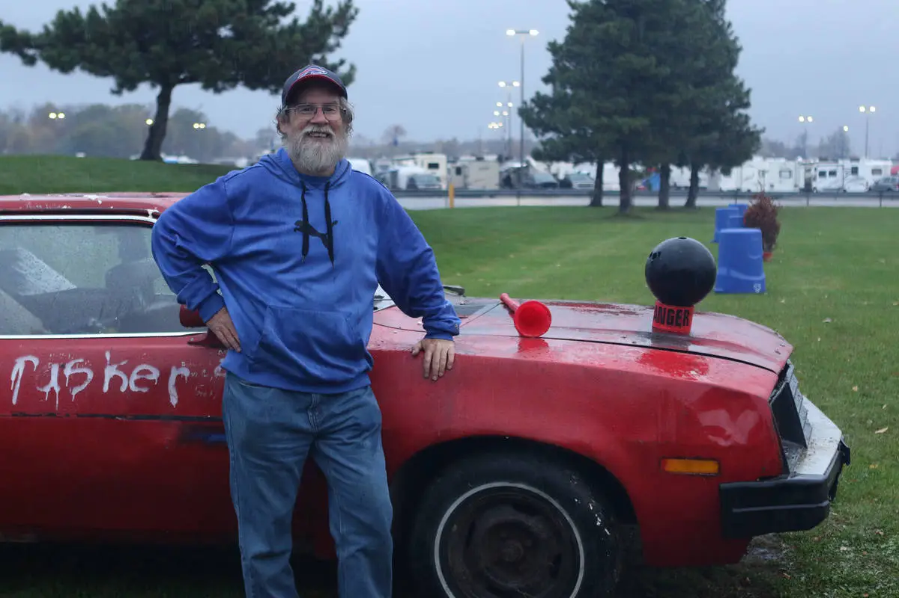
This is Ken Johnson better known as "Pinto Ron," he has attented every home and away game since 1994. He host iconcic tailgates every single week, he is the heart and soul of Bills Mafia. From cooking sausages on the hood of his car to getting covered in mustard and ketchup, Pinto Ron is here every week! Find him by smelling the ketchup in the air!
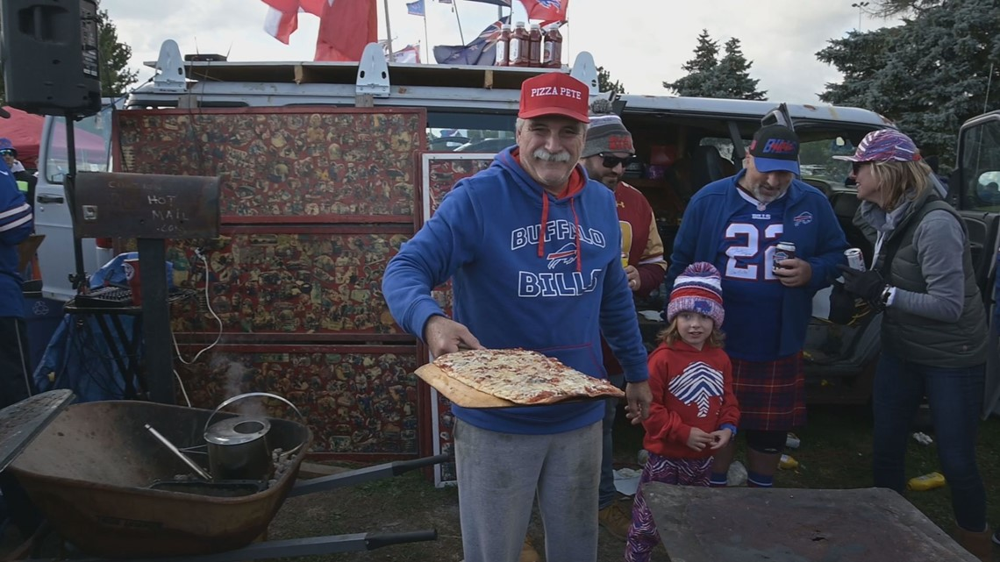
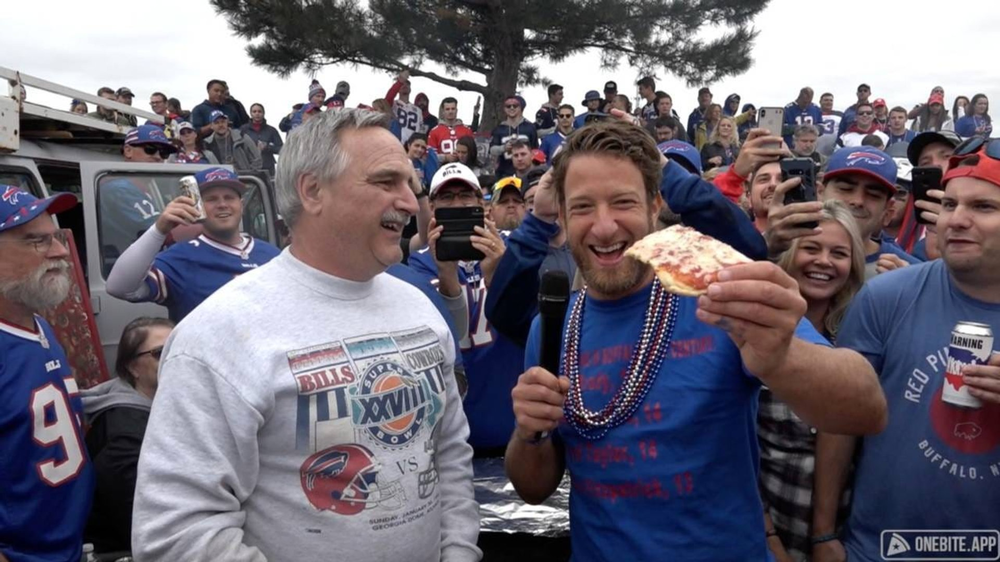
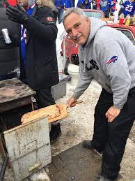
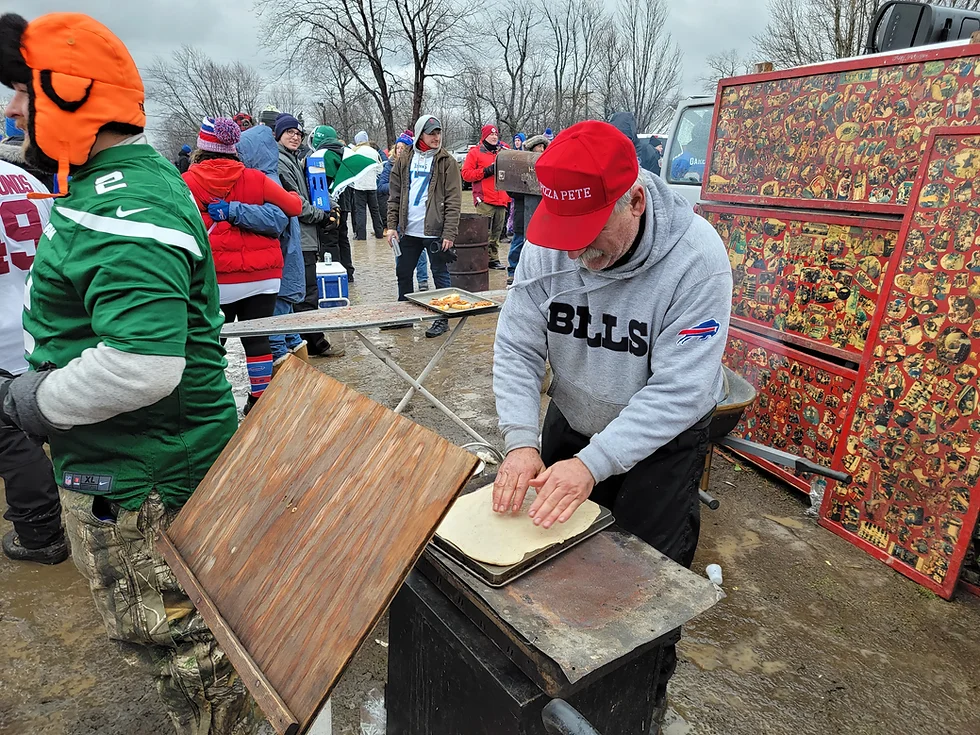
PIZZA PETE!!!! Pizza Pete is one of Buffalos most iconic fans. Comes to every home game cooking his signature pizza INSIDE A FILING CABINENT! It may not sound apitizing but trust me when I saw Pizza Petes Pizza is a must when attending a Bills game. He is usually right next to Pinto Ron as they are good friends!
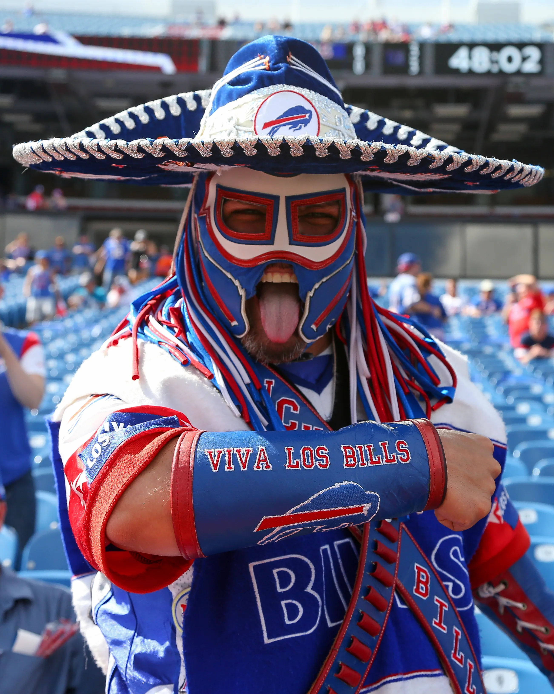
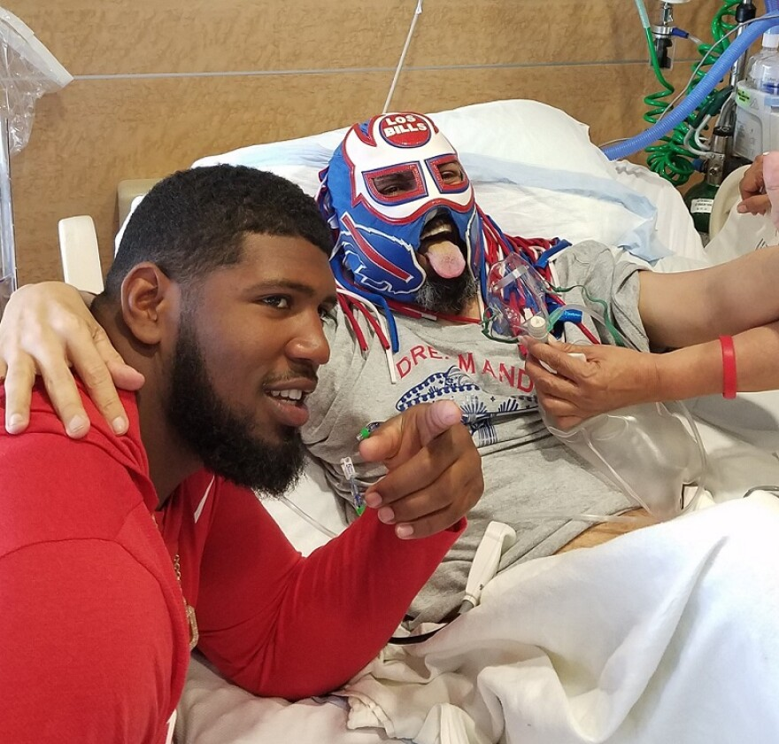
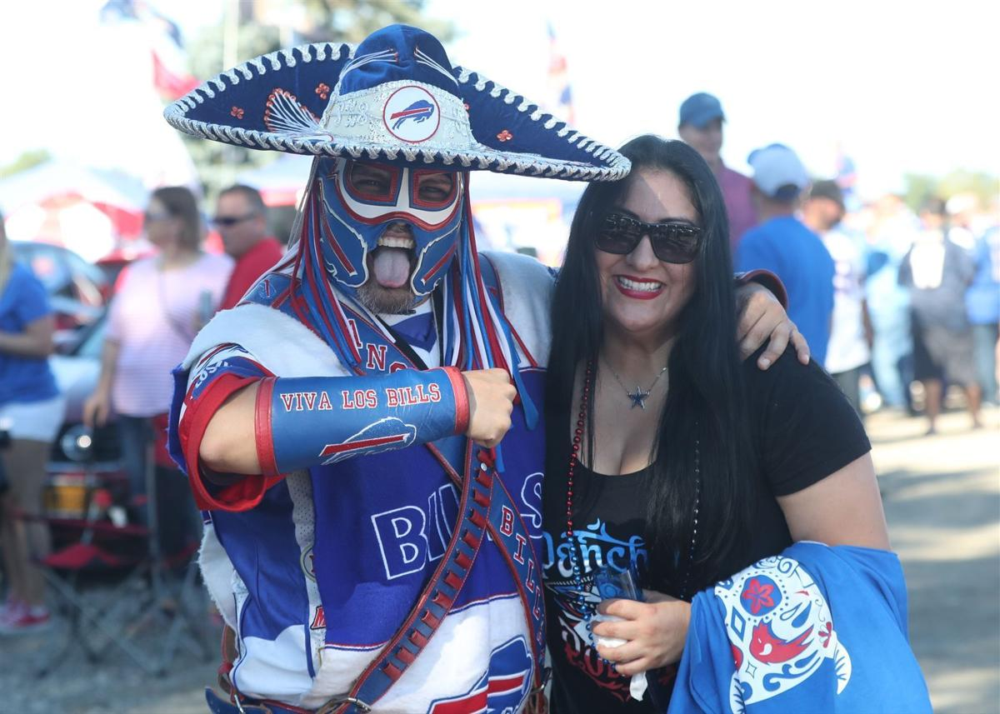
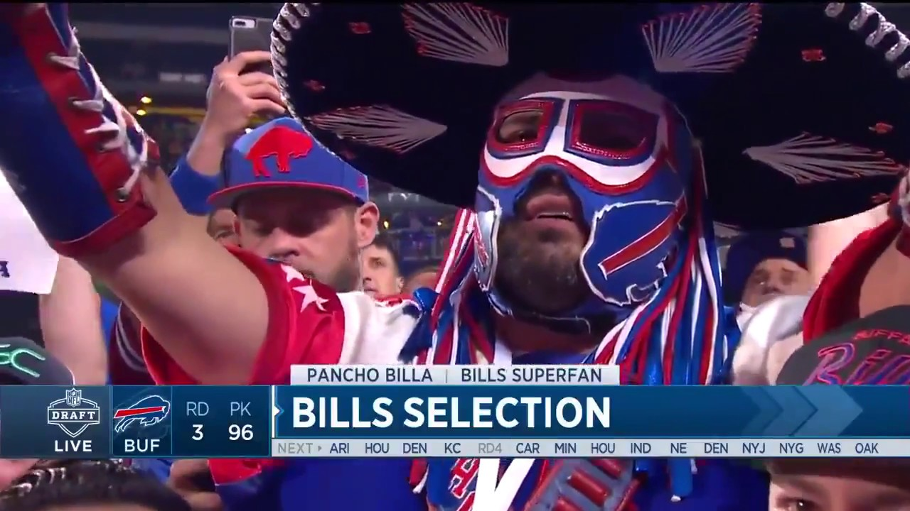
This is PANCHO BILLA, one of the most iconic faces in the Bills Mafia. Unfortunately Panch lost a battle to cancer in 2019 but he will always be remebered as one of the greatest Bills fans ever! He brought his outfit to every game and was an inspiration to many members on the team! Pancho will always be remebered for his great attitude and energetic smile!